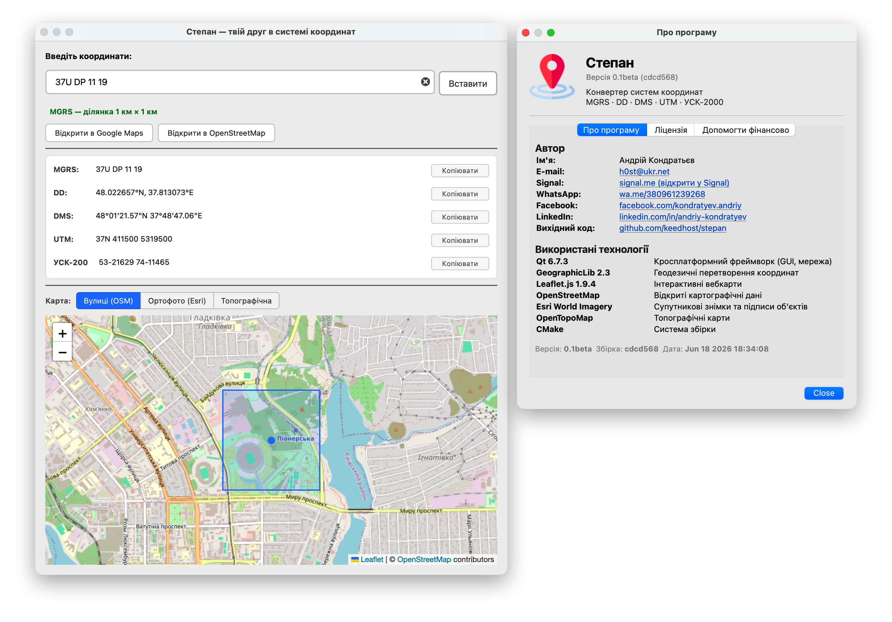
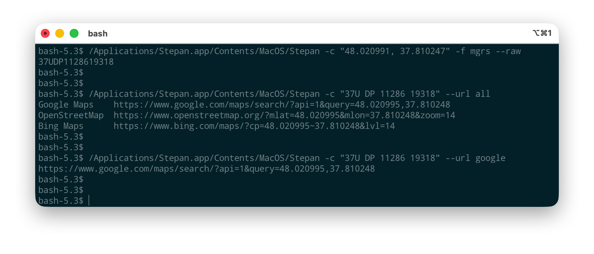
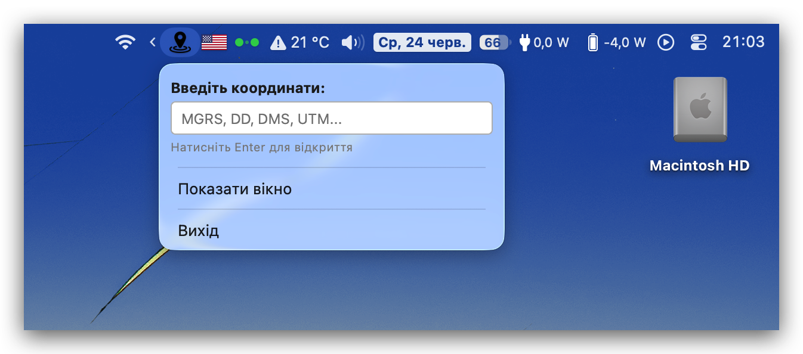
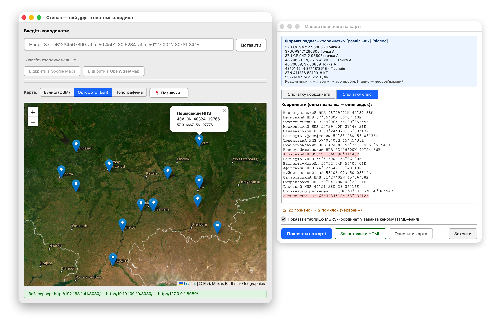
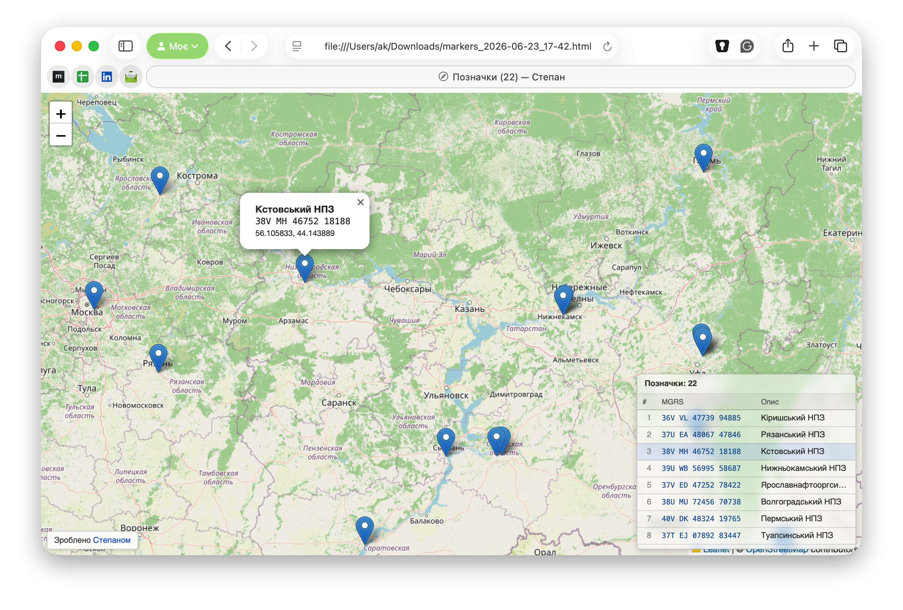

Десктопний конвертер систем координат для тих, хто щодня працює з картою. macOS · Windows · Linux.
| MGRS | 37U DB 12345 67890 |
| DD | 50.450100, 30.523400 |
| DMS | 50°27'03"N 30°31'24"E |
| UTM | 37U 312345 5590123 |
| УСК-2000 | 4123456.78 — 2345678.90 |
Мінімалістичний інтерфейс, що не заважає роботі — і повноцінний CLI для тих, хто любить термінал.

Головне вікно — введіть координату в будь-якому форматі, отримайте всі варіанти та точку на карті миттєво

CLI-режим — пакетна конвертація, інтеграція зі скриптами та автоматизація

Трей — Степан завжди поруч і не займає місця на панелі задач
Степан автоматично розпізнає формат і миттєво конвертує у всі підтримувані системи — без зайніх кроків.
Вставте координату в будь-якому форматі — MGRS, DD, DMS, UTM або УСК-2000 — і отримайте всі варіанти одразу.
Три шари: OpenStreetMap (вулиці), супутник Esri з підписами і OpenTopoMap (топографія). Точка конвертації відображається миттєво.
Повноцінний CLI для скриптів та автоматизації. Підтримується фільтр за форматом, raw-виведення і генерація посилань на карту.
GET /api/convert?q=37UDB... повертає JSON з усіма форматами. Інтеграція з будь-яким інструментом.
Мінімізується в трей, не займає місце на панелі задач. Координати можна вводити прямо з іконки трею.
Поряд з кожним форматом — кнопка копіювання. Швидко і без зайвих рухів.
Швидкий перехід до Google Maps, OpenStreetMap або Bing Maps за одним кліком без ручного введення.
Інтерфейс доступний українською та англійською мовами з миттєвим перемиканням у налаштуваннях.
Відкрийте діалог «Позначки», вставте список точок — по одній на рядок у будь-якому форматі — і відобразіть їх на карті. Результат можна зберегти як автономний HTML-файл з інтерактивною картою Leaflet.

Діалог «Позначки» — помилкові рядки підсвічуються червоним, кількість валідних точок відображається внизу
Формат рядка
| MGRS — Підпис | 37U CP 94712 95805 — Точка А |
| DD Підпис | 48.70639, 37.56889 Точка Б |
| DMS — Підпис | 48°01'15"N 37°48'36"E — Позиція |
| UTM Підпис | 37N 411286 5319318 КП |
| УСК-2000 Підпис | 53-21447 74-11251 Ціль |
Роздільник між координатами та підписом: — або : або пробіл. Підпис необов'язковий. Режим «Спочатку опис» — для списків виду «Назва — координати».

Карта з позначками та таблицею MGRS у правому куті — клік на рядок центрує карту на точці та відкриває спливаюче вікно з координатами
Показати на карті
Відображає всі точки у головному вікні та автоматично масштабує карту під набір.
Завантажити HTML
Автономний HTML-файл з Leaflet-картою. Інтернет потрібен лише для тайлів — сам файл працює офлайн.
Таблиця MGRS у HTML
Напівпрозора таблиця у правому куті збереженого файлу з переліком усіх точок і посиланнями на них.
Один застосунок — три платформи. Ідентичний функціонал на macOS, Windows та Linux. CI/CD автоматично збирає та тестує кожну версію.
macOS 11 Big Sur та новіші. Нативна підтримка Apple Silicon (M1/M2/M3) та Intel x86_64.
Windows 10 та Windows 11, 64-bit. Інсталятор автоматично завантажує VC++ Runtime, якщо потрібно.
Ubuntu 22.04+, Fedora 38+ та інші дистрибутиви. Чотири формати — на будь-який смак.
Завантажте готовий пакет зі сторінки Releases. GeographicLib та всі залежності вже включені.
DMG (рекомендовано)
# Змонтуйте DMG і скопіюйте в Applications hdiutil attach Stepan-*.dmg cp -R /Volumes/Stepan/Stepan.app /Applications/ # Зніміть карантин — один раз sudo xattr -r -c /Applications/Stepan.app # Запустіть open /Applications/Stepan.app
Альтернатива без Terminal
Натисніть правою кнопкою на Stepan.app → Відкрити → підтвердіть у діалозі. Після цього Gatekeeper запам'ятає ваш вибір і наступні запуски будуть звичайними.
Інсталятор (рекомендовано)
# Запустіть Setup.exe і дотримуйтесь інструкцій Stepan-*-windows-x64-Setup.exe # Якщо VC++ Redistributable відсутній — інсталятор # автоматично завантажить і встановить його
Портативна версія (без встановлення)
# Розпакуйте в будь-яке зручне місце Expand-Archive Stepan-*-windows-x64.zip -DestinationPath C:\Programs\ # Запустіть EXE з папки .\Stepan-*-windows-x64\Stepan.exe
AppImage — рекомендовано, будь-який дистрибутив
chmod +x Stepan-*-linux-x64.AppImage ./Stepan-*-linux-x64.AppImage
DEB — Debian / Ubuntu
sudo dpkg -i stepan_*.deb
sudo apt-get install -f # підтягне залежності, якщо потрібно
RPM — Fedora / RHEL / openSUSE
sudo dnf install ./stepan-*.rpm
tar.xz — портативно
tar -xJf Stepan-*-linux-x64.tar.xz ./bin/stepan
sudo apt install libfuse2CLI та HTTP API дозволяють вбудувати конвертацію координат у будь-який pipeline — від простого Bash-скрипту до веб-застосунку.
Пакетна конвертація списку MGRS-координат з текстового файлу і збереження результату у CSV. Зручно для обробки звітів та даних з місцевості:
#!/usr/bin/env bash # batch_convert.sh — MGRS-координати з файлу → CSV з lat/lon set -euo pipefail INPUT="${1:-targets.txt}" OUTPUT="${INPUT%.txt}.csv" printf 'MGRS,широта,довгота\n' > "$OUTPUT" count=0 while IFS= read -r mgrs || [[ -n "$mgrs" ]]; do [[ -z "$mgrs" || "$mgrs" =~ ^\# ]] && continue # пропустити порожні та коментарі dd=$(stepan --convert "$mgrs" --format dd --raw 2>/dev/null) || { printf '! Пропущено: %s\n' "$mgrs" >&2 continue } lat="${dd%,*}" lon="${dd#*,}" printf '%s,%s,%s\n' "$mgrs" "${lat// /}" "${lon// /}" >> "$OUTPUT" printf '+ %-24s %s\n' "$mgrs" "$dd" ((count++)) || true done < "$INPUT" printf '\nГотово: %d координат → %s\n' "$count" "$OUTPUT"
Приклад файлу targets.txt
# Цілі для конвертації
37UDB1234567890
37UDP1128619318
36UUA2345678901
Запуск
bash batch_convert.sh targets.txt
# + 37UDB1234567890 → 50.450100, 30.523400
# + 37UDP1128619318 → 50.193800, 30.421600
# Готово: 3 координати → targets.csv
Читає координати з файлу, конвертує кожну через Степан CLI і записує CSV з усіма форматами одразу. Підходить для подальшої обробки в pandas, QGIS або будь-якому GIS-інструменті:
#!/usr/bin/env python3 # batch_convert.py — пакетна конвертація через Степан CLI import subprocess, csv, sys from pathlib import Path def stepan_convert(coord): """Повертає словник {формат: значення} або кидає RuntimeError.""" r = subprocess.run( ['stepan', '--convert', coord], capture_output=True, text=True, timeout=5 ) if r.returncode != 0: raise RuntimeError(r.stderr.strip() or 'невідома помилка') out = {} for line in r.stdout.splitlines(): if ':' in line: k, _, v = line.partition(':') out[k.strip()] = v.strip() return out src = Path(sys.argv[1] if len(sys.argv) > 1 else 'targets.txt') lines = [l.strip() for l in src.read_text(encoding='utf-8').splitlines() if l.strip() and not l.startswith('#')] header = ['вхід', 'MGRS', 'DD', 'DMS', 'UTM', 'УСК-2000'] rows, errors = [], 0 for coord in lines: try: d = stepan_convert(coord) rows.append([coord, d.get('MGRS', ''), d.get('DD', ''), d.get('DMS', ''), d.get('UTM', ''), d.get('УСК-2000', '')]) print('+ ' + coord.ljust(22) + ' → ' + d.get('DD', '')) except Exception as e: print('! ' + coord.ljust(22) + ' ПОМИЛКА: ' + str(e), file=sys.stderr) errors += 1 out = src.with_suffix('.csv') with open(out, 'w', newline='', encoding='utf-8') as f: csv.writer(f).writerows([header] + rows) print('\nГотово: ' + str(len(rows)) + ' OK, ' + str(errors) + ' помилок → ' + str(out))
Запуск
python3 batch_convert.py targets.txt
# + 37UDB1234567890 → 50.450100, 30.523400
# Готово: 3 OK, 0 помилок → targets.csv
Результат targets.csv
вхід,MGRS,DD,DMS,UTM,УСК-2000 37UDB1234567890,37U DB 12345 67890,"50.450100, 30.523400",50°27'03"N 30°31'24"E,37U 312345 5590123,4123456.78 - 2345678.90
Увімкніть HTTP-сервер у Степан → Налаштування → Веб-сервер. Оберіть мережевий інтерфейс і порт (за замовчуванням 8080). Сервер приймає будь-який підтримуваний формат координати.
curl
# Конвертувати MGRS curl "http://localhost:8080/api/convert?q=37UDB1234567890" # Конвертувати DD — пробіл потребує URL-кодування curl -G "http://localhost:8080/api/convert" \ --data-urlencode "q=50.4501, 30.5234" # Конвертувати UTM curl -G "http://localhost:8080/api/convert" \ --data-urlencode "q=37U 345678 5590123"
Відповідь (JSON)
{
"mgrs": "37U DB 12345 67890",
"dd": "50.450100, 30.523400",
"dms": "50°27'03\"N 30°31'24\"E",
"utm": "37U 312345 5590123",
"usk2000": "4123456.78 - 2345678.90",
"lat": 50.4501,
"lon": 30.5234
}
Python (requests)
import requests
API = 'http://localhost:8080/api/convert'
coords = [
'37UDB1234567890',
'50.4501, 30.5234',
'37U 345678 5590123',
]
for q in coords:
r = requests.get(API, params={'q': q}, timeout=5)
r.raise_for_status()
d = r.json()
print(f'Input: {q}')
print(f' MGRS: {d["mgrs"]}')
print(f' DD: {d["dd"]}')
print(f' DMS: {d["dms"]}')
print(f' lat/lon: {d["lat"]}, {d["lon"]}')
print()
0.0.0.0 або конкретний IP у налаштуваннях.
GeographicLib завантажується автоматично через CMake FetchContent при першій збірці. Потрібні лише Qt 6 і C++17-компілятор.
Вимоги: CMake ≥ 3.20, Qt 6, Xcode CLT
xcode-select --install brew install cmake qt@6
Клонувати та зібрати
git clone https://github.com/keedhost/stepan.git
cd stepan
cmake -B build -DCMAKE_BUILD_TYPE=Release
cmake --build build --parallel $(sysctl -n hw.logicalcpu)
# Запустити
open build/Stepan.app
Створити DMG
macdeployqt build/Stepan.app -dmg
Вимоги: Visual Studio 2022 (з C++), Qt 6, CMake, Ninja
# Встановіть Qt через qt.io/download або winget
winget install Kitware.CMake
winget install Ninja-build.Ninja
Клонувати та зібрати (Developer PowerShell for VS 2022)
git clone https://github.com/keedhost/stepan.git
cd stepan
cmake -B build -G Ninja -DCMAKE_BUILD_TYPE=Release
cmake --build build --parallel
# Розгорнути Qt DLL поруч з EXE
windeployqt --release build\Stepan.exe
Залежності — Ubuntu / Debian
sudo apt-get install -y \ cmake ninja-build \ qt6-base-dev \ qt6-webengine-dev \ qt6-webchannel-dev \ libgl-dev
Залежності — Fedora
sudo dnf install -y \ cmake ninja-build \ qt6-qtbase-devel \ qt6-qtwebengine-devel \ qt6-qtwebchannel-devel
Клонувати та зібрати
git clone https://github.com/keedhost/stepan.git
cd stepan
cmake -B build -G Ninja -DCMAKE_BUILD_TYPE=Release
cmake --build build --parallel $(nproc)
# Запустити
./build/stepan
Відкрите програмне забезпечення без зайніх залежностей. Все статично прилінковане або тягнеться автоматично.
Widgets, WebEngineWidgets, WebChannel, Network — кросплатформний GUI-фреймворк
MSVC 2022, GCC 12+, Clang 15+. CMake 3.20+ як система збірки, Ninja як бекенд
Точні геодезичні обчислення: MGRS, UTM, координатні перетворення. Статична бібліотека — нуль runtime-залежностей
Вбудована інтерактивна карта з підтримкою трьох tile-провайдерів
GeographicLib завантажується автоматично при першій збірці — жодних ручних залежностей
Автоматичне пакування: DEB, RPM, tar.xz для Linux; NSIS-інсталятор і portable ZIP для Windows
Збірка, пакування та тестування GUI на macOS, Windows і Linux після кожного push
Три джерела тайлів: вулиці, супутник з підписами, топографічна карта
Завантажується в реальному часі з GitHub API.
Відповіді на найпоширеніші запитання.
sudo xattr -r -c /Applications/Stepan.appstepan --convert "37UDB1234567890" — всі форматиstepan --convert "50.4501, 30.5234" --format mgrs — лише MGRSstepan --convert "37UDB1234567890" --raw — без форматування, для скриптівstepan --convert "37UDB1234567890" --url google — посилання на Google Mapsstepan --convert "37UDB1234567890" --url all — посилання на всі сервісиstepan --help — повна довідка
curl "http://localhost:8080/api/convert?q=37UDB1234567890"mgrs, dd, dms, utm, usk2000, lat, lon.
~/Library/Preferences/ua.ss-education.stepan.plistHKCU\Software\ss-education\Stepan~/.config/ss-education/Stepan.ini